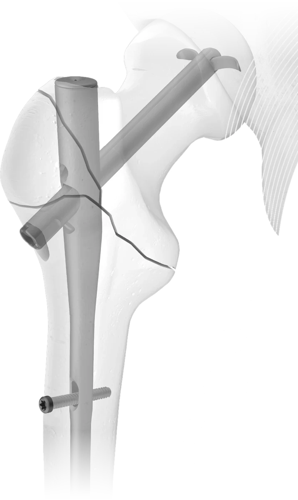

Home / References / Hansson DCN
SwemacHansson DCN — Dynamic Cephalomedullary Nail
A cephalomedullary nail system for trochanteric fractures of the proximal femur, with dynamic head fixation.
Overview
The Hansson Dynamic Cephalomedullary Nail (DCN) from Swemac is indicated for stabilizing trochanteric fractures, including non-unions, malunions and actual or impending pathologic fractures of the proximal femur.
The system pairs the nail with self-cutting, fully threaded locking screws for distal locking, while head fixation is achieved with a dedicated fixation device available in different lengths.
Key features
- For trochanteric fractures of the proximal femur
- Dynamic head fixation, available in different lengths
- Self-cutting, fully threaded distal locking screws
- From Swemac, the makers of the Hansson Pin system

Client IP generated
This collaboration produced additional intellectual property for Swemac Innovation AB: granted patents owned by the client, with Christian Lutz named as inventor.
- EP 3223732 B1Intramedullary nail · Swemac Innovation AB
- US 10,398,482 B2Intramedullary nail · Swemac Innovation AB
Manufacturer
Hansson DCN — Dynamic Cephalomedullary Nail is a product of Swemac. Full product information, IFUs and surgical techniques are available from the manufacturer.
Visit SwemacGet in touch
Let’s talk about your project.
Whether you need a development partner, a second opinion on your portfolio or the right contact in the industry — we come straight to the point.
- Bluewater MedicalLebølvej 10, 6470 Sydals, Denmark